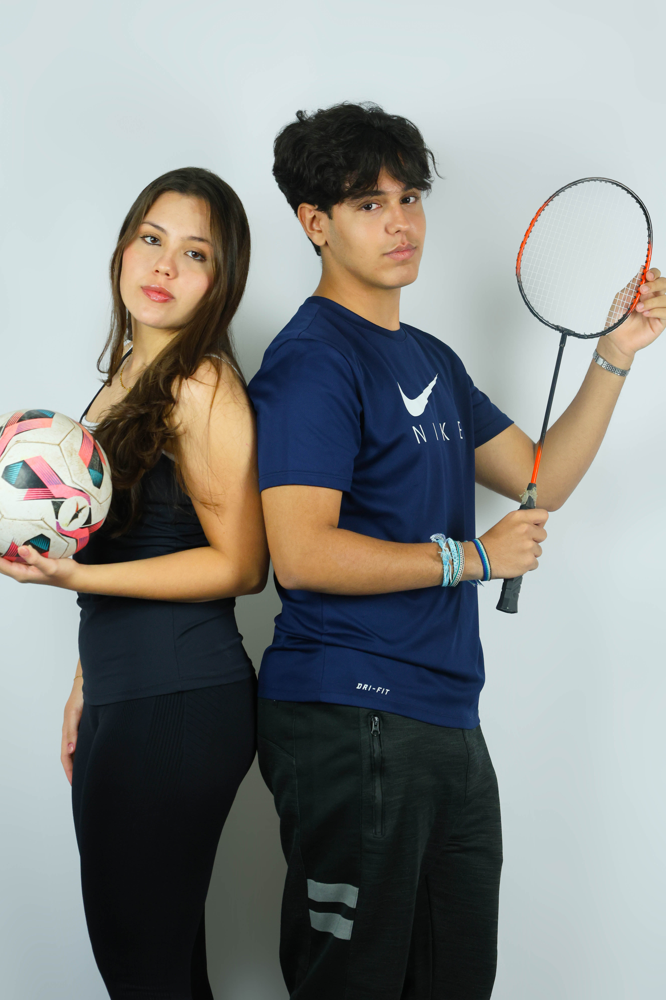

Saiba mais sobre nós
Muito mais que esporte!
A Beyond nasceu em Milão, inspirada pela paixão italiana por esporte, design e performance. Sua identidade surgiu do Azzurro, símbolo de orgulho, excelência e união no esporte italiano.
O nome Beyond significa “além” e representa nossa filosofia de superar limites, buscar novos desafios e alcançar sempre o próximo nível.